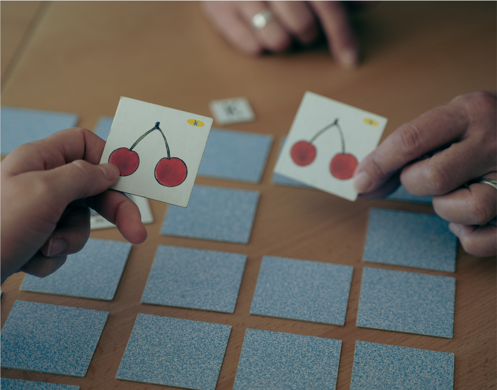
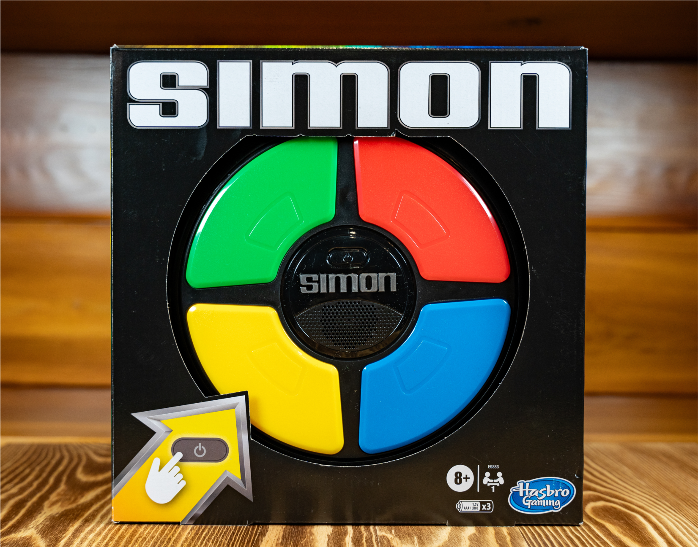
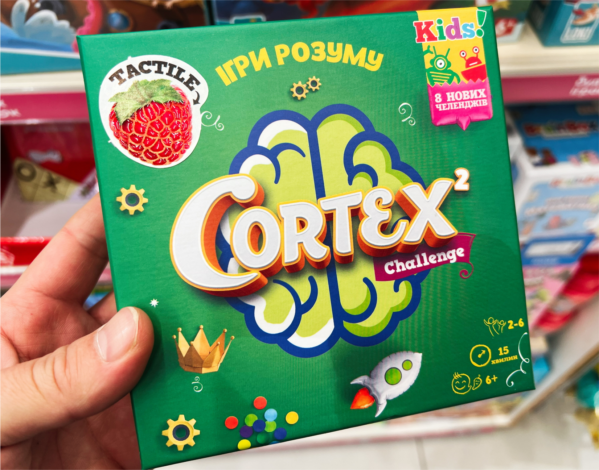

Memory
1. Memory Match
Test your memory and collect the most cards! This game challenges you to remember where each image is placed through visual memorization. Find out who has the sharpest memory!
Age: 3-7
Players: 2
2. Simon
Simon challenges your memory like never before! Watch the lights flash in a sequence and repeat them back correctly to stay in the game. Each round gets harder as the pattern grows longer, pushing your brain to keep up! Stay focused and recall every step—one mistake, and it's game over! This fast-paced game will put your memory to the ultimate test!
Age: 8+
Players: 2
3. Cortex
Cortex is a fast-thinking memory challenge! Compete in brain-boosting mini-games that test your recall and logic. Watch closely, memorize patterns, and react fast—only the sharpest minds will win! With puzzles that keep you on your toes, Cortex is the perfect game to train your memory while having fun!
Age: 8+
Players: 1-2